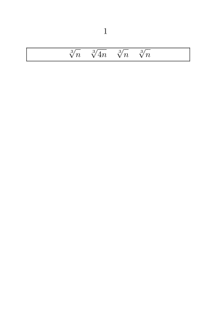

Contents
Summary
The command \vphantom creates an invisible item that has height but no width.
Settings
Description
\vphantom typesets the supplied content and then throws it away, leaving a 'phantom' i.e. an invisible item that has zero width but the maximum height of the phantom text. This then influences the height of what follows.
Examples
Aligning the top of square root signs (radicals)
In this example the expressions have been framed to better highlight the differences. The third cube root contains a 'phantom' digit 4 so that its height matches the second one. The first and last don't have this phantom and have a smaller root sign. (Actually, it's the same sized character but lower in the line so it protrudes below the baseline a little.)
-
\setuppapersize [A7] [A7] \starttext \framed{ \startformula \sqrt[3] {n} \quad \sqrt[3]{4n} \quad \sqrt[3] {\vphantom{4} n} \quad \sqrt[3] {n} \stopformula } \stoptext
- 